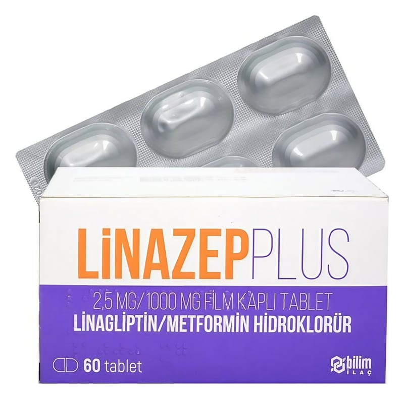

Linazep Plus 2,5 mg/1000 mg Film Kaplı Tablet, 60 Adet

Ne için kullanılır
KT · Bölüm 1LİNAZEP PLUS, bikonveks oval, açık pembe filmle kaplanmış tabletlerdir. Bu ilaç, iki ayrı etkin madde içerir: Linagliptin ve metformin. Linagliptin, “DPP-4 inhibitörleri (dipeptidil peptidaz-4 inhibitörleri)” olarak adlandırılan bir ilaç sınıfına aittir. Metformin, “biguanidler” olarak adlandırılan bir ilaç sınıfına aittir.
LİNAZEP PLUS , karton kutuda, 60 tabletlik Poliamid/Al /PVC/Al folyo blister ambalajda, kullanma talimatı ile birlikte sunulmaktadır. Bu ilacı kullanmaya başlamadan önce bu KULLANMA TALİMATINI dikkatlice okuyunuz, çünkü sizin için önemli bilgiler içermektedir. • Bu kullanma talimatını saklayınız. Daha sonra tekrar okumaya ihtiyaç duyabilirsiniz. • Eğer ilave sorularınız olursa, lütfen doktorunuza veya eczacınıza danışınız. • Bu ilaç kişisel olarak sizin için reçete edilmiştir, başkalarına vermeyiniz. • Bu ilacın kullanımı sırasında, doktora veya hastaneye gittiğinizde doktorunuza bu ilacı kullandığınızı söyleyiniz. • Bu talimatta yazılanlara aynen uyunuz. İlaç hakkında size önerilen dozun dışında yüksek veya düşük doz kullanmayınız.
Sayfa 2
LİNAZEP PLUS etkisini nasıl gösterir? Bu iki etkin madde, “Tip 2 diabetes mellitus” olarak adlandırılan bir şeker hastalığı tipinde, erişkin hastalarda kan şekeri düzeylerini kontrol altında tutmak için birlikte çalışır. Linagliptin, glikoz bağımlı olarak insülin (kan şekerini düşüren hormon) salgılanmasını artırır ve glukagon salgılanmasını (kan şekeri düştüğünde şeker seviyesini yükseltmeye çalışan hormon) azaltır, böylece glikoz seviyelerinde genel bir iyileşmeye neden olur. Metformin ise karaciğerde glikoz üretimini azaltarak, kaslarda glikoz kullanılmasını artırarak ve bağırsaklarda glikoz emilimini geciktirerek, kan şekerinin düşmesine yardımcı olur.
LİNAZEP PLUS , diyet ve egzersizle birlikte uygulanmasıyla, yemeklerden sonra salıverilen insülin düzeylerini iyileştirmeye yardımcı olur ve vücudunuz tarafından oluşturulan şeker miktarını düşürür.
LİNAZEP PLUS , tek başına veya şeker hastalığı için kullanılan insülin salgılatıcı oral antidiyabetik veya insülin gibi diğer belli ilaçlarla birlikte uygulanabilir.
Tip 2 diyabet (Tip 2 şeker hastalığı) nedir? Tip 2 diyabette vücudunuz, yeterli miktarda insülin oluşturmaz ve oluşan insülin gerektiği şekilde çalışmaz. Vücudunuz çok fazla şeker de üretebilir. Bu durum ortaya çıkarsa, şeker (gl ukoz) kanda birikir. Bu birikim, kalp hastalığı, böbrek hastalığı, körlük ve kol veya bacağın kesilmesinin gerekmesi gibi ciddi tıbbi sorunlara yol açabilir.